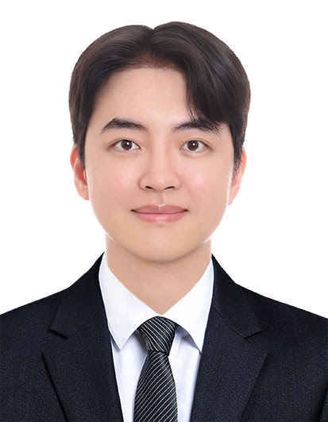

Seohyun Koo
구서현
Integrated B.S.–M.S. Program학석사 통합과정
People behind the research
Connecting fundamental chemistry, computational methods and materials science.

Assistant Professor
Open profile →Interested in postdoctoral research at CCML? Explore opportunities →
구서현
Integrated B.S.–M.S. Program학석사 통합과정
김상엽
Undergraduate Researcher학부연구생
최희순
Undergraduate Researcher학부연구생
최유진
Undergraduate Researcher학부연구생
Explore research opportunities in computational chemistry and materials science.
Get in touch →